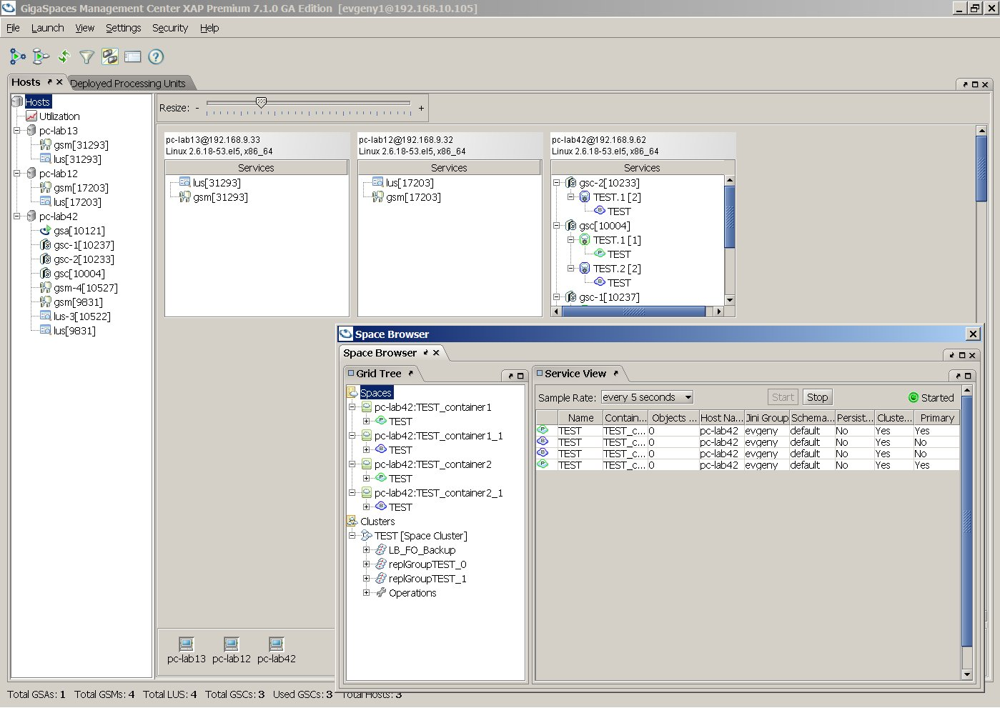
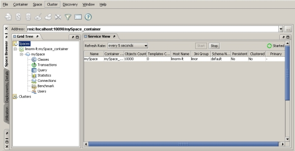

Section Summary: GigaSpaces Management Center is a GUI that allows you to view spaces, containers, and clusters and configure them, using the Space Browser tab. You can also deploy and manage services using the Deployments tab.
Using the GigaSpaces Management Center in production and large-scale environments
|
Overview
GigaSpaces Management Center is a Graphical User Interface that allows you to view spaces, containers, and clusters and configure them, using the Space Browser tab. You can also deploy and manage services using the Deployments tab.
 To start the GigaSpaces Management Center, run:
To start the GigaSpaces Management Center, run:
<GigaSpaces Root>\bin\gs-ui.bat/sh
The GigaSpaces Management Center is separated into 3 tabs (Space Browser, Deployment, Details, Utilization):

Each GigaSpaces Management Center tab is described in a dedicated documentation tab below:
Space Browser Tab
| This section has undergone many changes in the latest releases of GigaSpaces and might not be accurate. It will be fully updated soon. |
Overview
The Space Browser tab allows you to view and configure two main components in GigaSpaces – space and cluster.
The main Spaces node () displays the Space Network view – a table listing all spaces in the network, and different details regarding those spaces.
The Spaces node includes:
- Space container nodes () that hold spaces (). Container nodes allow you to manage space containers – shutting down the container, creating a space under it, and more.
- Space nodes () allow you to manage spaces – starting or stopping, destroying, cleaning the space, and more. Each space node includes different views under it, that allow you to manage it further.
See screenshot...
The main Clusters node () includes: - Cluster nodes () that allow you to manage the cluster – stop, start, restart, clean the cluster, and more.
- Cluster group nodes () hold the cluster members (). Clicking a cluster member displays a graphic representation of the cluster, and tables showing details regarding replication, failover, load-balancing, and classes.
See screenshot...
Section Contents
- GigaSpaces Browser Tree Panel and Configuration Panel — Using the Grid Tree and the Configuration Panel on the right.
- Classes View - GigaSpaces Browser — Used to view data stored on the space (classes and number of instances).
- Connections View - GigaSpaces Browser — Displays information regarding all connected and disconnected proxies.
- Object Inspector — Using the selected object's UID, the Object Inspector takes the object itself from the space and displays its class fields, allowing you to drill down into object arrays.
- Query View - GigaSpaces Browser — Used to query the space using SQL statements and view the resulting data set in tabular format.
- Statistics View - GigaSpaces Browser — Provides graphical representation of space operations performed and average throughput.
- Transactions View - GigaSpaces Browser — The Transactions view allows you to view all of the trasactions that are currently taking place in the selected space.
- GigaSpaces Browser Menus and Buttons — Using the File menu, Container menu, Space menu, Cluster menu, Windows menu, Help menu, button toolbar, and address bar.
- Managing Containers - GigaSpaces Browser — Using the Container Configuration tab of a container node in the Grid Tree, and tool buttons relevant for containers.
- Container Configuration Directory Services Tab - GigaSpaces Browser — Lookup service options for the container.
- Container Configuration General Tab - GigaSpaces Browser — Home directory, license, container socket port, security mode.
- Container Configuration JMS Tab - GigaSpaces Browser — Enabling JMS, enabling internal JNDI, enabling external JNDI.
- Container Maintenance - GigaSpaces Browser — Restarting, shutting down and refreshing containers; viewing a runtime configuration report.
- Pending Notify Templates Information — Information regarding pending notify templates is exposed in all management components – GigaSpaces Management Center, JMX, CLI.
- Working with Clusters - GigaSpaces Browser — Creating a cluster, replication options, load-balancing options, failover options, verifying and editing cluster definitions, visualizing clusters.
- Cluster View - GigaSpaces Browser — Using Cluster View areas: Cluster Tree, visual display, legend, and information panel.
- Creating Cluster from Existing Cluster - GigaSpaces Browser — Using an existing cluster as a basis for a new cluster.
- Creating Custom Cluster - GigaSpaces Browser — Building a custom cluster from a standard cluster schema.
- Creating Static Cluster - GigaSpaces Browser — How to create a cluster from scratch using the Cluster Wizard in the GigaSpaces Browser.
- Editing Existing Cluster Configuration - GigaSpaces Browser — Editing an existing cluster's configuration using the Cluster Wizard.
- Failover Group - GigaSpaces Browser — A failover group defines failover between spaces in the cluster.
- Load-Balancing Group - GigaSpaces Browser — A load-balancing group defines load-balancing between spaces in the cluster.
- Replication Group - GigaSpaces Browser — Common settings, sync/async replication, transmission policies, filters, recovery options.
- Verifying Cluster Configuration - GigaSpaces Browser — Verifying the cluster configuration is OK and placing it on member machines.
- Working with Spaces - GigaSpaces Browser — Performing operations on a space in the GigaSpaces Browser.
- Basic Space Configuration - GigaSpaces Browser — Using the basic space configuration dialog.
- Space JMS - GigaSpaces Browser — Using the JMS tab of the advanced space configuration dialog.
- Space Maintenance - GigaSpaces Browser — Pinging, destroying, cleaning, stopping, starting, and restarting a space using the button toolbar.
- Space Memory Management - GigaSpaces Browser — Using the Memory Management tab of the advanced space configuration dialog.
- Space Persistence - GigaSpaces Browser — Using the Persistence tab of the advanced space configuration dialog.
- Space Serialization, Implicit Indexing and Threads - GigaSpaces Browser — Using the Performance tab of the advanced space configuration dialog.
- Space Timeout, Filters and Lease Manager - GigaSpaces Browser — Using the General tab of the advanced space configuration dialog.
Deployments, Details Tab
| This section is under construction and might have some missing information. It will be fully updated soon. |
Overview
The Deployments tab allows you to perform different operations in the OpenSpaces Service Grid Processing Unit Container, such as deploying applications and managing running services.
Section Contents
- Deployments Tab Menus and Buttons — Using the File menu, Launch menu, Deployment menu, Settings menu, Help menu, and button toolbar.
- Navigating from Deployed Processing Unit to Relevant Space — Deploying a Processing Unit using the GMC Deployments tab.
- Service Grid Network and Deployments Status - Deployments Tab
- UI Undeploy and Update Options — UI Undeploy, Redeploy, and Update options.